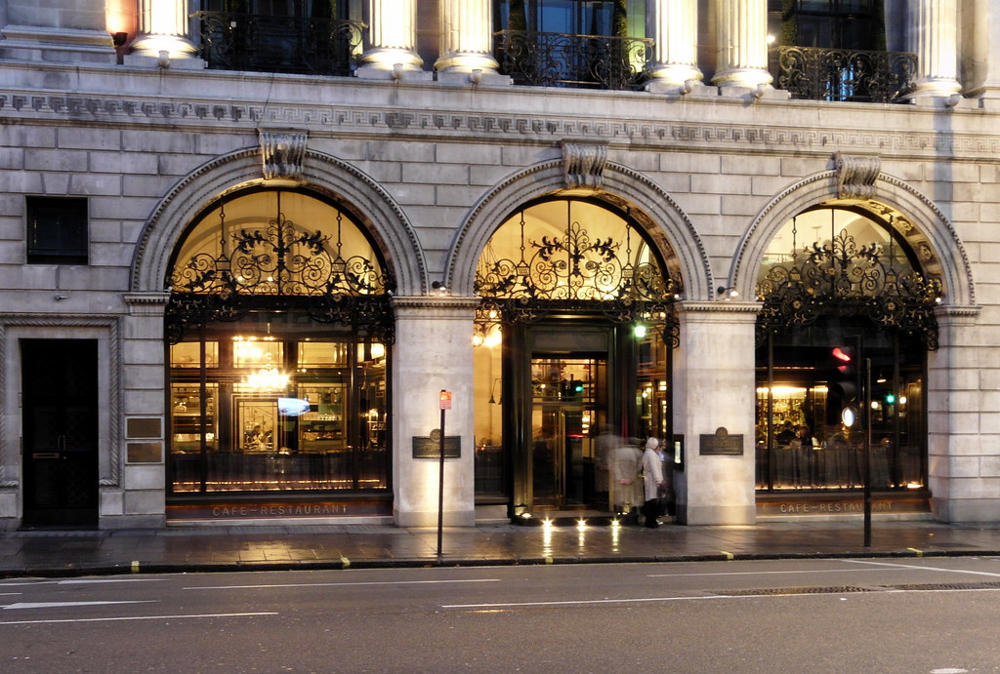

The Wolseley Experience

Elegance and Culinary Excellence: The Wolseley, London
Nestled in the heart of London, The Wolseley is an embodiment of timeless elegance and culinary mastery
Where Elegance Meets Tradition
The Wolseley resides in a stunning Art Deco building on Piccadilly, where classic charm merges seemlessly with contemporary luxury. It's a place where every detail exudes sophistication and offers a captivating dining experience.
European Culinary Artistry
The menu at The Wolseley pays homage to European classics, drawing inspiration from French and Viennese cuisine. Whether you're enjoying a leisurely brunch, indulging in afternoon tea, or savoring an exquisite dinner, each dish is a masterpiece in taste and presentation.
Unmatched Service
Impeccable service is the cornerstone of The Wolseley experience. The staff's professionalism and attention to detail ensure that every visit is a memorable one.
An Iconic Destination
The Wolseley is perfect for all occasions, be it a romantic dinner or a special celebration. It's a place where cherished memories are made, and it continues to enchant and inspire all who visit.
Discover The Wolseley and be transported to an era of timeless elegance and culinary artistry.